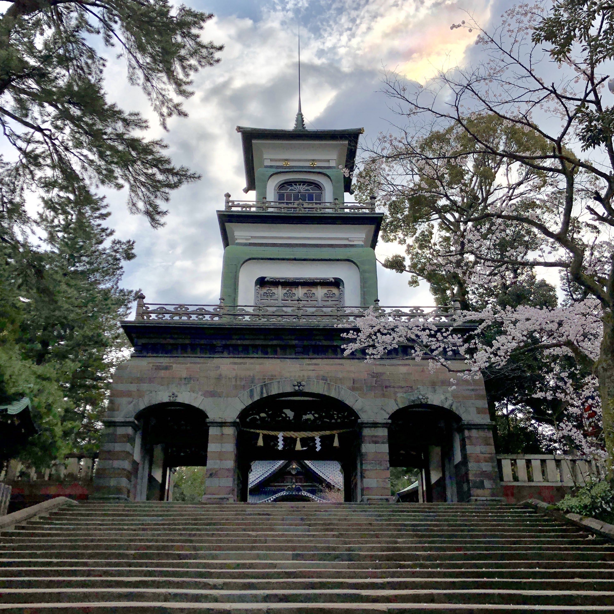

Oyama Jinja Shrine
Oyama Jinja shrine was built in order to enshrine first feudal load of Kaga domain, Maeda Toshiie and his wife in the early Meiji Era. Most famous point of this shrine is the main gate. The style of the gate is mixed three different religious architectural elements. First is Japanese one, second is Chinese one, and third is European one. At the time, Japan had faced European culture, and Japanese Westernized culture had emerged. The gate is one of the architecture representing the new culture.
INFORMATION
| Hours | Always open |
|---|---|
| Admission | Free |
| TEL | 076-231-7210 |
| Address | 11-1 Oyamamachi, Kanazawa, Ishikawa 920-0918 |
| Home Page | visitkanazawa.jp/ mustgoplace/ touristspot/area2/5 |
The Fourth High School Memorial Museum
Photo credit : Kanazawa City
In the early Meiji Era, new Japanese government execute “Fukoku kyohei” which is the plan to enrich the country and strengthen the armed forces. They considered that education is very important, so they made new institutions of higher education at 5 main city. They are called number school because school groups bore numbers. (1.Tokyo, 2.Sendai, 3.Kyoto, 4.Kanazawa, 5.Kumamoto). This building is the museum of one of the historical prestigious schools in Japan.
INFORMATION
| Hours | 9:00～17:00 |
|---|---|
| Admission | ¥370 |
| TEL | 076-262-5464 |
| Address | 2 Chome-2-5 Hirosaka, Kanazawa, Ishikawa 920-0962 |
| Home Page | www.pref.ishikawa.jp/ shiko-kinbun/ |